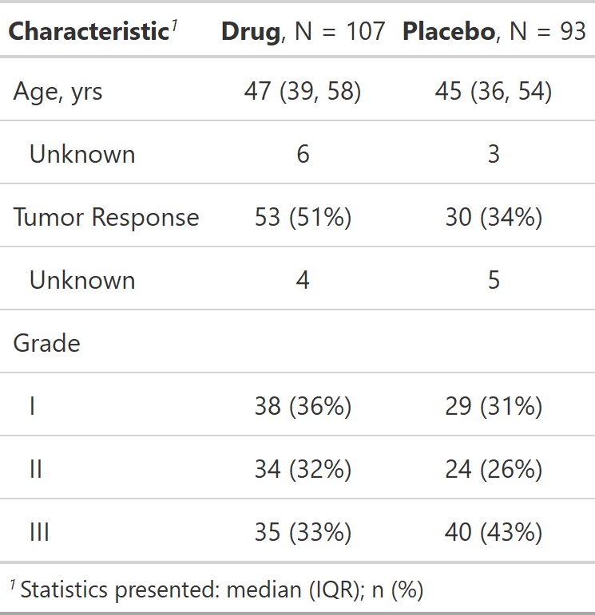

| as_gt {gtsummary} | R Documentation |
Function converts gtsummary objects to a gt_tbl objects. Function is used in the background when the results are printed or knit. A user can use this function if they wish to add customized formatting available via the gt package. Review the tbl_summary vignette or tbl_regression vignette for detailed examples in the 'Advanced Customization' section.
as_gt(x, include = NULL, exclude = NULL, omit = NULL)
x |
Object created by a function from the gtsummary package (e.g. tbl_summary or tbl_regression) |
include |
Character vector naming gt commands to include in printing.
Default is |
exclude |
Character vector naming gt commands to exclude in printing.
Default is |
omit |
DEPRECATED. Argument is synonymous with |
A gt_tbl object

Daniel D. Sjoberg
tbl_summary tbl_regression tbl_uvregression tbl_survival
as_gt_ex <-
trial[c("trt", "age", "response", "grade")] %>%
tbl_summary(by = trt) %>%
as_gt()